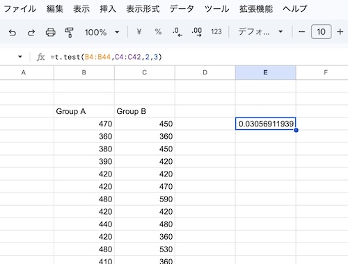

統計的推測（Draft version）
A/Bテストで得られた「2群の平均の差」を推定しながら、統計的推測の意味と具体的な方法を紹介します。
- 検定: 仮説を評価する
- 信頼区間: 推定の不確実性を評価する
- ベイズ推定: データと事前分布をもとにパラメーターの事後分布を推定し、その不確実性を評価する（確率で評価する）
統計学の基本的な考え方
データを集めて整理して比較する。データの傾向を把握・推測して、判断に役立てる。そのときに活躍する統計的な手法では「どのようにデータを眺めているのか」を説明します。
その平均に差はあるか
実務においてA/Bテストの結果が得られたとき、まずは処置群と対照群でどのくらいの違いがあったかを確認しておきたいです。
サンプル事例
- あるカフェチェーンで「ラテ」の店内POPを刷新する施策が進行中。
- A店では従来POPを、B店では新POPを掲出して、A/Bテストを模した比較実験を実施。
- テスト初日の昼の会議で初動速報を求められているため、初日の開店から3時間以内に来店してラテを購入した各店40人前後の顧客単価（1人あたりの購入額）を集計。顧客単価が変化しているかを検証する。
補足
実務での利用場面をイメージしやすくするため、現実的にありそうな設定にしています。ここでは統計的推測の説明しやすさを企図して、以下想定が成り立っているとします。
不足条件
- 処置割当単位（店舗）と分析単位（顧客）が一致していない（分析単位は個別の観測値ではあるが、同じ店舗の顧客は店舗環境を共有しているため、同一店舗内の観測値は相関している可能性がある）。
- 2店舗両方に同じ顧客が含まれる可能性がある。
想定条件
- 各店の顧客単価は、それぞれの母集団から得られた「独立した」観測値とする。
- 2店舗の標本は互いに独立しているものとする（どちらにも来店購入した顧客はいない）。
実務では、理想的な実験条件やデータを常に用意できるとは限りません。ここでは、現実的な利用場面をイメージできるように簡略化した設定を用い、いくつかの仮定を置いて統計的推測の方法を説明します。実際の分析では、こうした仮定やデータの制約を意識しながら、得られた結果を意思決定の参考情報として活用することが大切です。
■処置効果の捉え方
2店舗は立地や客層、テスト以前の売上規模やラテの販売動向などが似ており、顧客の分布も大きく違いません。また片方の店舗のみで発生するイベントはなく、施策の有無と顧客単価の両方に影響しそうな、店舗間の系統的な違いはなさそうです。とはいえRCTではないため（交絡要因がないとは言い切れない）、2群の差がそのまま施策による因果効果とはみなしにくいです。
■Raw Data
Group A（Control） = [470, 360, 380, 390, 420, 420, 480, 420, 440, 420, 480, 410, 420, 480, 360, 410, 420, 410, 480, 530, 360, 420, 450, 420, 360, 420, 360, 510, 540, 360, 440, 390, 480, 420, 360, 390, 420, 480, 360, 420, 500]
Group B（Test） = [450, 360, 450, 420, 420, 470, 590, 420, 480, 360, 530, 360, 530, 510, 440, 420, 380, 420, 480, 480, 530, 420, 550, 420, 420, 530, 440, 510, 480, 380, 420, 530, 360, 360, 500, 480, 470, 480, 420]
各群の平均値を算出し、その差がどのくらいかを見るのは、分析初期段階における有効手段の一つです。A店（従来通りのPOPを掲出した対照群）の平均顧客単価は426円、B店（新POPを掲出した処置群）は453円、2群の平均値には約27円の差がありました。
| Group | N | Mean | Std | Min | Max |
|---|---|---|---|---|---|
| Group A（Control） | 41 | 425.9 | 49.1 | 360.0 | 540.0 |
| Group B（Test） | 39 | 453.1 | 59.2 | 360.0 | 590.0 |
平均値の差は施策によって生じたようにも思えます。たまたま生じた偶然の出来事にも思えます。しかし手元の観測データをどれだけ眺めても、今の平均値の差がたまたまなのか（どのくらい変動してもおかしくなさそうなのか）はわからないです。
かといって「平均で27円差でした」との事実情報だけの報告では、結果をどう受け止めればいいのか関係者は困惑するでしょう。こんなときに役立つのが統計的推測です。
統計的推測
統計や機械学習では「今手元にある観測データは、なんらかの確率的なデータ生成過程から得られた」といった捉え方をします。
- 各店約40人のデータは、ラテ顧客単価データ発生装置（母集団）からランダムに抽出されたサンプル（標本）である、とモデル化して考える。
- 観測データを手がかりにして、背後にある母集団やデータ生成過程を特徴づける値（パラメーター）を推測する。
標本から母集団の特徴を推測できる背景には、確率論に基づく統計学の理論があります。例えば大数の法則などの理論的性質を根拠として、標本データの平均（実測値）を、母集団における平均（母平均）の推定値として利用します。
※大数の法則: 適切な条件のもとで標本抽出を繰り返し、標本サイズを大きくしていくと、標本データにおける平均や比率が母集団における平均や比率に近づくこと。
こうした統計的推測により母集団の特徴を推し量ることで、観測された平均値やその差27円はたまたま発生したのか、この値はどのくらい変動しそうかなどが解釈しやすくなります。
統計的推測の考え方
ひとまず読み飛ばしてもOKです。
詳細説明
前述の通り、統計や機械学習では「今手元にある観測データは、なんらかの確率的なデータ生成過程から得られた」といった捉え方をします。そしてその仕組みを確率モデルで表現します。
※観測データがどのような仕組みで生み出されるのかを、確率分布などを使ったモデルで表現し、事象の理解や予測に役立てるアプローチを統計モデリングと呼ぶこともある。
ラテの顧客単価は注文する人や状況によって変わります。これは「ラテ顧客単価はある確率分布に従って確率的に決まる」と捉えることができます。例えば、顧客単価が平均400円、標準偏差50円の正規分布に従うと仮定すれば、その分布から顧客単価が確率的に生成されることで手元にある観測データが得られた、とみなせます。
確率分布とパラメーター
ただし、実際にどのような確率分布からデータが生成されたのか、真の分布を直接知ることはできません。平均が本当に400円だったのか、正規分布ではなく別の形状の分布だったのかなどは観測データだけではわかりません。
そこで分析者は、データの生成過程を表現するための確率モデルを設定します。確率モデルの平均やバラツキ、分布の形状などを決める値をパラメーターと呼びます。正規分布であれば、平均を表す μ（ミュー）と、標準偏差を表す σ（シグマ）がパラメーターに相当します。
分析者が知りたいのは、観測データの背後にある母集団やデータ生成過程の特徴です。しかしパラメーターの真の値はわかりません。
そこで、手元にある観測データを手がかりにして、どのようなパラメーターであれば、今回のデータが得られたことをうまく説明できるのかを探ります。
尤度と尤度関数
パラメーターの値によって、手元にある観測データが得られる確率は変わります。平均400円の正規分布を仮定した場合と、平均500円の正規分布を仮定した場合とでは、今回観測された顧客単価データたちが得られる確率は異なります。
このように、あるパラメーターのもとで、実際に観測されたデータが得られる確からしさ（パラメーターと観測データとの適合度合い）を表す指標が「尤度（Likelihood）」です。
観測データを固定し、パラメーターの値を変化させたときに尤度がどのように変わるかを（グラフや数式で）表現したものを「尤度関数（Likelihood Function）」と呼びます。
尤度関数を調べることで、今回の観測データをよく説明できるパラメーターの値や、その値以外ではどの程度データを説明しにくくなるのかを確認できます。
※尤度関数は、あくまで観測データとパラメーター（≒分析者が設定した確率モデル）の関係を表しているだけ。パラメーターの良し悪しを直接判定するものではないし、モデルと真の分布の適合度合いの指標として常に適切なわけでもない。
統計的推測にはいろんな方法があります。その際、確率モデルを用いてデータの生成過程を表現し、尤度を手がかりにパラメーターについて推測する、という考え方が共通の土台になります。
検定・信頼区間の方法とベイズ推定では、パラメーターをどのように扱い、尤度をどのように利用するかが異なります。それぞれの考え方と具体的手順を見ていきます。
検定と信頼区間
統計的推測にはいろんな方法があり、その一つが検定です。検定にもいろんな方法があります。サンプル事例のように「2群の母平均に差があるか」が関心事の場合にはt検定が用いられます。
ここでは同じ考え方にもとづく、検定と信頼区間について説明します。
検定の考え方
検定は、帰無仮説のもとで今手元にある観測結果がどれほどめったにないか（たまたま発生したとは考えにくいか）を一定のルールに基づいて判断する、というアプローチをとります。以下はt検定の例です。
- まず「2群の母平均に差はない」という帰無仮説を設定します。
- 有意水準を「5%」と設定します。
- 帰無仮説が正しいと仮定した場合に、今回観測された結果と同じか、それ以上に極端な結果が起こりうる確率（p値）を算出します。
- p値があらかじめ設定した有意水準以下の場合は、帰無仮説を棄却します。帰無仮説のもとでは今回の観測結果はめったにない出来事と判断します。
- p値が有意水準を上回る場合は、帰無仮説のもとでは今回の観測結果は確率的なバラツキの範囲内にある（帰無仮説を棄却する十分な証拠が得られなかった）と判断します。
※有意水準: 帰無仮説を棄却するかどうかのしきい値として、検定する前に設定しておく基準値。5%という値がよく用いられる。
※p値は現実世界における確率ではない。帰無仮説という人為的に設定した条件（モデル）のもとでの確率。
理論的背景
このやり方がうまく機能する背景には、300年前の学者さんたち（ド・モアブル、ラプラスなど）が発見した確率分布の性質をはじめ、長い時間をかけて発展してきた理論などがあります。
- 標本平均の差は標本抽出によって変動する: 今回観測された27円差は、標本データから計算された値です。同じ条件で標本抽出を繰り返せば、そのたびに異なる平均値の差が得られます。
- その変動を確率分布として考える: 標本抽出を繰り返したときに得られる統計量の分布を標本分布と呼びます。検定では帰無仮説が正しいと仮定した場合の標本分布を考えます。
- 中心極限定理によって分布の形状を近似できる: 2群のデータが独立に抽出され、分散が有限であるなどの条件を満たす場合、サンプルサイズが十分に大きければ、中心極限定理によって標本平均の差の標本分布は正規分布に近づきます。
- t分布を使ってp値を算出する: 観測された平均値の差を標準誤差で割って検定統計量を計算し、p値を求めます。
検定の強み
有意水準を設定して検定をおこなっても、誤って帰無仮説を棄却する、すなわち本当は差がないのに差があると間違った判断をする可能性は残ります（第一種の過誤と言います）。
有意水準5%の検定であれば、5%の確率で判断を間違えるリスクを抱えています。それでも、
- 帰無仮説が正しい（本当に差がない）場合に、
- 検定の前提条件や運用上のルールが満たされていれば、
- （同じ条件で独立したテストを実施して）同じ検定をおこなったときに、
- 誤って帰無仮説を棄却する確率は原則として5%以下におさまります。
つまり、あらかじめ決めた有意水準で誤判定率を長期的視点で制御・管理しやすいのが検定の強みです。
Welch t検定
母平均の差を評価するt検定には複数の種類があります。ここでは、2群の分散が等しいと仮定しない「Welch t検定」を使います。エクセルやスプレッドシートの関数で簡単に実行できます。
- 有意水準を「5%」と設定します。
- 関数T.TEST を呼び出します。
- 2群のデータ範囲をそれぞれ指定します。
- その次は、基本的には「2」を指定します（両側検定: 新POPによる単価増だけでなく単価減も想定）。
- その次は、基本的には「3」を指定します（等分散を仮定しないWelchのt検定）。
=t.test(B4:B44,C4:C42,2,3)といった感じです。- するとp値が出力されます。

t検定あれこれ
- Welch t検定は等分散仮定時にも使用してよい（studentのt検定を使用する必然性は薄い）。
- t検定の前に、必ず正規性検定をおこなう必要はない。
- サンプルサイズが小さい場合は、分布の形状や外れ値を確認することが望ましい。
検定結果の読み解き方
p値とあらかじめ設定した有意水準を対比します。
- セルにはp値（0.0306）が出力されました。
- これは、2群の母平均に差がないと仮定した場合に、今回観測された平均値の差27円と同じかそれ以上に極端な差が得られる確率が3.06%であることを意味します。
- 得られたp値は有意水準5%（0.05）以下のため、今回の観測結果はめったにないと判断します。
つまり、有意水準5%のもとで帰無仮説は棄却され、2群の平均値には統計的に有意な差があるといえそうです。Welch t検定により、今回観測された平均値の差27円は、たまたま発生した出来事とは考えにくいことが見えてきました。
信頼区間
観測された2群の平均の差27円は実測値です。そして大数の法則などを拠り所にした、母平均の差の推定値でもあります。とはいえ手元の標本から推定した値が母平均の差とぴったり一致するとは限りません。
前述の通り、同じ条件で標本抽出を繰り返せば、そのたびに異なる平均値の差が得られるためです。27円という推定値は不確実さを含んでおり、しかもピンポイントの点推定なのでどのくらい不確かなのか見当がつきません。
信頼区間（CI: Confidence Interval）は、このような推定の不確実性を評価するためのものです。点推定をもとに、その不確実性（標本のバラツキなど）を考慮して、母平均の差を区間推定の形で示します。
| 検定（p値） | 信頼区間 | |
|---|---|---|
| 知りたいこと | 帰無仮説とデータの整合性 | 母平均の差の推定範囲 |
| わかること | 帰無仮説のもとでの観測結果の珍しさ | 差の大きさと推定の不確実性 |
| 使い道 | 統計的に有意か | どの程度の差が考えられるか |
信頼区間の算出
母平均の差の信頼区間をエクセルなどで算出するには複数の関数が必要で手間なので、ここではWebサイトを利用します。
- 2群の観測データを入力
- ページ上部に表示されるサンプルサイズ（N）などを見て、入力データが適切に読み込まれていることを確認
- Runボタンを押す
- ページ下部に検定結果が表示されます
※「群間の差」タブのWelch t検定の結果を参照してください。

信頼区間の読み解き方
- p値: p-value（0.0306） T.TEST関数での計算結果と同じになります（エクセルなどの書式設定次第では端数処理の影響で少し異なる場合もあります）。
- 信頼区間（CI）: CI Lower（2.62） CI Upper（51.82）2群の母平均の差の95%信頼区間はおよそ3円～52円であることを意味します。
信頼区間の算出により母平均の差の区間推定が得られたことで、おおまかな効果の大きさ（27円）と、その不確実性（3円〜52円）が見えてきました。
95%信頼区間の意味するもの
イメージとしては、同条件のA/Bテストと信頼区間の算出を100回おこなえば、100個の信頼区間のうち、約95個には真の値（本当の母平均の差）が含まれる、すなわち割合を表す（実際に100回テストしたときに必ず95%になるわけではない）。
- 推定値の不確実性を「長期的視点で」評価している。
- 真の値を含む「割合」を表している。
- 真の値が3円～52円の範囲にある確率が95%という意味ではない。
- 今回得られた信頼区間（3円～52円）については、真の値を含んでいるか、含んでいないかのどちらかである。
エクセルやスプレッドシートで算出したいとき
A列をGroup A（Control） B列をGroup B（Test）として、95%信頼区間の場合（一部関数における端数処理の影響で、ツールでの出力結果と少し異なるときもあります）。
| 指標 | 計算式 | 意味 |
|---|---|---|
| n1, n2 | =COUNT(A2:A42), =COUNT(B2:B42) | サンプルサイズ |
| m1, m2 | =AVERAGE(...) | 標本平均 |
| v1, v2 | =VAR.S(...) | 不偏分散 |
| SE | =SQRT(v1/n1 + v2/n2) | 標準誤差 |
| t | =(m2-m1)/SE | t値 |
| dof | =(v1/n1+v2/n2)^2 / ((v1/n1)^2/(n1-1) + (v2/n2)^2/(n2-1)) | 自由度 |
| p値 | =T.TEST(A2:A15, B2:B15, 2, 3) | |
| t臨界値 | =SQRT(dof*(1/BETA.INV(0.05, dof/2, 0.5) - 1)) | |
| CI Lower | =(m2-m1) - t臨界値*SE | |
| CI Upper | =(m2-m1) + t臨界値*SE |
検定と信頼区間でわかったこと
検定と信頼区間は、同じ統計的枠組みに基づいています。サンプル事例のようにWelch t検定とそれに対応する95%信頼区間を用いる場合、2つの結果には整合性があります。
| 検定結果 | 信頼区間 | 意味 |
|---|---|---|
| p値は有意水準5%以下 | 95%信頼区間に0が含まれていない | 母平均の差が0であるとは考えにくい |
| p値は有意水準5%を上回る | 95%信頼区間に0が含まれている | 母平均の差が0であるという帰無仮説を棄却するだけの十分な証拠はない |
95%信頼区間（3円〜52円）は0を含んでおらず、Welch t検定で得られたp値（0.0306）< 有意水準0.05と一致しています。
検定と信頼区間により、観測された平均の差が帰無仮説のもとでは起こりにくい結果であることと、母平均差の推定値とその不確実性が確認できました。
テストの実績値「平均で27円差」という事実情報に加えて、結果には統計的に有意な差があることを提示し、効果の大きさの推定範囲も示すことで、関係者が解釈しやすい報告内容にアップデートできました。
そして、おそらく以下のような質問が予想されます。
- 「新POPによって顧客単価が増加する確率はどのくらいか」
- 「20円以上の増加が見込める可能性はどのくらいか」
- 「逆に、新POPで顧客単価が落ち込むリスクはどの程度か」
検定や信頼区間は、こうした問いに答えるためには設計されていません。これらに答えるべく、検定や信頼区間とはまた違ったアプローチをとる統計的推測の一つが、ベイズ推定です。
次に、今回のデータを使ってベイズ推定をおこない、母平均差の事後分布からどのような情報が得られるのかを見ていきます。
ベイズ推定
今手元にある観測データを手がかりにして、背後にある母集団やデータ生成過程を特徴づける値（パラメーター）を推測する。この目的は、検定・信頼区間もベイズ推定も同じです。
※サンプル事例であれば、2店それぞれの母集団における顧客単価の平均（母平均）や標準偏差などがパラメーターに相当する。2群の母平均の差は、パラメーターから導かれる、関心のある指標と位置付けられる。
検定・信頼区間では、未知のパラメーターを固定された値（真の値）として扱い、標本からその値を推測します。
ベイズ推定では、未知のパラメーターを確率分布（真の分布）として扱います。観測データを得る前段階の分布（事前分布）を設定しておき、観測データを反映して更新した分布（事後分布）を使って推測します。
webサイトでベイズ推定
ベイズ推定を自力でおこなうのは手間なので、ここではWebサイトを利用します。
- 2群の観測データを入力
- ページ上部に表示されるサンプルサイズ（N）などを見て、入力データが適切に読み込まれていることを確認
- Estimateボタンを押す
- ページ下部にベイズ推定結果が表示されます
ベイズ推定の中身
このWebツールでは以下の流れでベイズ推定をおこなっています。
- 各群の母平均や標準偏差などのパラメーターがどのような値をとりそうか、観測データのバラツキなどを参考にした事前分布を自動的に設定します。
- 各パラメーターについて、事前分布に観測データを反映して更新した事後分布を求めます。
- MCMC（マルコフ連鎖モンテカルロ法）という手法を用いて、事後分布に従う各パラメーターの値を繰り返し抽出（サンプリング）します。
- このサンプリング結果を集めることで、各パラメーターの事後分布を近似的に表現します。
- 推定した各パラメーターの事後分布から、母平均の差の事後分布を求めます。
- 事後分布の形状や関連数値を見て、サンプリングがうまく実行できたかを診断します。
- そして例えば「新POPによって顧客単価が増加する確率はどのくらいか」を事後分布から計算します。
- MCMCは確率的なサンプリング手法なので、同じデータと設定で再実行しても、ぴったり同じ結果にはならないです（おおむね近い結果にはなります）。
観測データの生成プロセスと事前分布の設定
ベイズ推定をおこなう際、分析者は以下2点を設定する必要があります。
- 観測データの生成プロセス（尤度関数となる確率分布の選定）: 観測データがどんなルール（確率モデル）から生まれたか
- 確率モデルのパラメーターの事前分布: 確率モデルの形状や特徴を表すパラメーターの探索範囲（観測データを得る前にどのような値を想定するか）
どちらも本来は、分析者が目的やデータの性質に応じて自由に設定可能です。このツールでは以下設定にしています。
観測データの生成プロセス: 各群の観測データがそれぞれ「t分布」から生成されると想定しています。
- t分布は 平均mu 尺度scale 自由度nu の3つのパラメーターで形状が決まります。
- 群ごとにmuとscaleを持ち、nuは全群で共通とします。
-
scaleはstd（標準偏差）と似た、分布のバラツキの大きさを表します。nu>2のとき、t分布のstdはscaleから計算できます。
std = scale × √(nu/(nu−2)) - t分布はnuが大きくなるにつれて、その形状は正規分布に近づきます。そのためt分布を想定することで、両端の厚い（裾の重い）分布から正規分布に近い分布まで幅広く表現できます。
t分布は正規分布よりも裾が重く、極端な値（外れ値）が観測される可能性を多めに見積もっています。これにより正規分布想定に比べて、外れ値がある場合にもその影響を受けにくい「頑健な」推定が期待できます。
※観測データの生成プロセスにt分布を用いる頑健な推定は、Lange, Little & Taylor (1989) などで知られた手法を踏襲しています。
t分布のパラメーターの事前分布
- 平均mu（ミュー μ）
- 観測データ全体の平均を中心とし、観測データ全体の標準偏差の2倍を標準偏差とした、幅の広い正規分布（弱情報事前分布 Weakly Informative Prior）
- 尺度scale
- 観測データ全体のスケールを参考にした、幅の広い一様分布（弱情報事前分布）
- 下限は0に近い正の値とすることで、バラツキが非常に小さいケースも考慮する
- 上限は観測データ全体のスケールを基準に設定
- 自由度nu（ニュー ν）
- nuが小さい値をとりやすくそして大きな値も考慮するために、平均29（ラムダ λ=1/29）の指数分布を2だけ右にシフトした分布
- 裾の重いt分布からほぼ正規分布までを幅広く探索
観測データの外れ値を許容しやすいt分布から、ほぼ正規分布までをまかなうには、0をピークに右に裾が長い指数分布は好都合です。ただしnuは0より大きい必要があり、nuは30を超えると正規分布に近づきます（ν=1はCauchy分布と同じ）。そこで右にシフトしています。
※群間比較の枠組みや事前分布の設定は、Kruschke (2013) のBESTを参考に、自由度を2超に制限し、尺度パラメーターから標準偏差を換算して報告する形に改変しています。 BEST論文の写し
"This prior was selected because it balances nearly normal distributions (ν > 30) with heavy-tailed distributions (ν < 30)."（ほぼ正規分布となる領域［ν > 30］と、裾の重い分布となる領域［ν < 30］のバランスをとるためにこの事前分布が選ばれた）
ここでは結果を読み取りやすくするため、scaleからstdを計算して事後分布として表示することを優先しています。そこで標準偏差を定義できるように、1ではなく2シフトしています（自由度を2より大きく制限しているため、代償として1<nu<=2に対応しきれないですが影響軽微と考えています）。
MCMCの設定値
chains=4, tune=1000, draws=1000です。
パラメーターの値を（直前の状態を利用しながら次の値を）順番に生成していく一連のサンプリング系列を「チェーン」と呼びます。ここでは初期値を変えて4本のチェーン（chains=4）を実行しています。
複数のチェーンを設けることでそれぞれのサンプリング結果を比較でき、同じ事後分布を適切に探索できているかを診断しやすくなります（チェーン数が多ければ推定の正しさが保証されるわけではない）。
そして4チェーンそれぞれでステップサイズなどのサンプラー設定を調整しながらサンプリングを実行します。
サンプラー調整期間のため事後分布推定に使わないサンプリング個数（tune）と、残すサンプリング個数（draws）の初期設定はそれぞれ1,000です（診断結果をみて増やすことも可能）。
最初の4,000個（tune = 1000 × 4chains）は除外して、残った4,000個（draws = 1000 × 4chains）のサンプリング結果を使って事後分布を近似しています。